01
Зубы стоят неровно, челюсти смыкаются не так
Исправление прикуса
Работа с положением зубов и характером смыкания челюстей между собой.
Ставрополь · клиника авторской ортодонтии
Карина Урбашевичус - врач-ортодонт с 17-летним опытом и основатель собственной клиники в Ставрополе. Веду эстетические и сложные случаи: от брекетов и элайнеров до подготовки к ортогнатической хирургии.
Обсудим вашу ситуацию и поймём, какие варианты лечения подходят именно вам
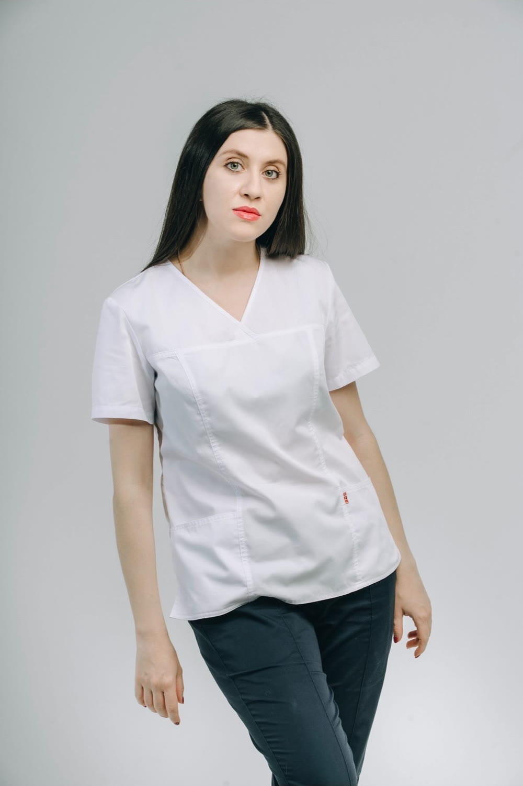
Главное
Одни и те же зубы можно выровнять по-разному - и получить разный результат для смыкания, эстетики лица и устойчивости эффекта. Поэтому лечение начинается не с выбора аппаратуры, а с причины: что происходит с прикусом, челюстями и опорой мягких тканей. Аппаратура - следствие плана, а не наоборот.
Какие задачи решаю
С каждой из этих задач приходят по-разному: кто-то за эстетикой, кто-то с направлением от смежного специалиста. Разбираемся в причине - и подбираем путь.
Исправление прикуса
Работа с положением зубов и характером смыкания челюстей между собой.
Эстетика улыбки
Выстраиваем линию улыбки с учётом особенностей и пропорций лица, а не по шаблону.
Выбор метода лечения
Показываю, что даёт каждый вариант именно в вашей ситуации и чем они отличаются по срокам и комфорту.
Скелетные формы прикуса, асимметрии, случаи после неудачного лечения
Ситуации, где нужна глубокая диагностика и понимание причины, а не повторная попытка «просто выровнять».
Подготовка к ортогнатической хирургии
Ортодонтическое сопровождение до и после хирургического этапа - совместно с челюстно-лицевым хирургом.
Как проходит лечение
Ни одно решение не принимается на первом приёме вслепую: сначала мы понимаем ситуацию, и только потом говорим о сроках и аппаратуре.
Знакомимся, разбираем вашу ситуацию: что беспокоит, что хочется изменить, что уже пробовали раньше.
Снимки, модели, анализ прикуса и пропорций лица. Это основа, без которой план лечения будет догадкой.
Объясняю, что вижу и какие есть пути: чем они отличаются по срокам, комфорту и результату. Решение принимаем вместе.
Веду вас на всех этапах с регулярным контролем - до финального смыкания и закрепления результата.
Результаты лечения
Лучше всего о работе врача говорят результаты лечения. Реальные клинические случаи и снимки на разных этапах. Потяните ползунок, чтобы увидеть разницу.
Ортодонтия работает не только на зубной ряд. Вместе с положением зубов меняется линия улыбки и то, как она читается на лице целиком. На снимках - результат лечения пациентки клиники.
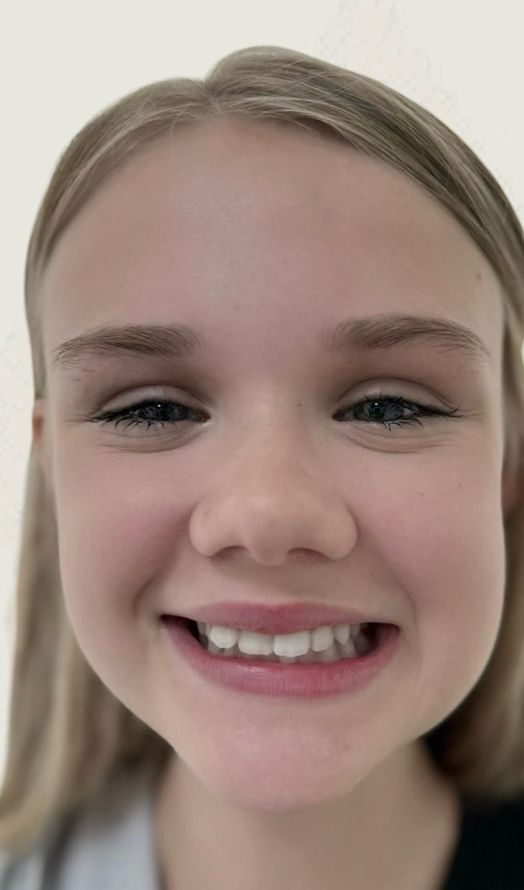
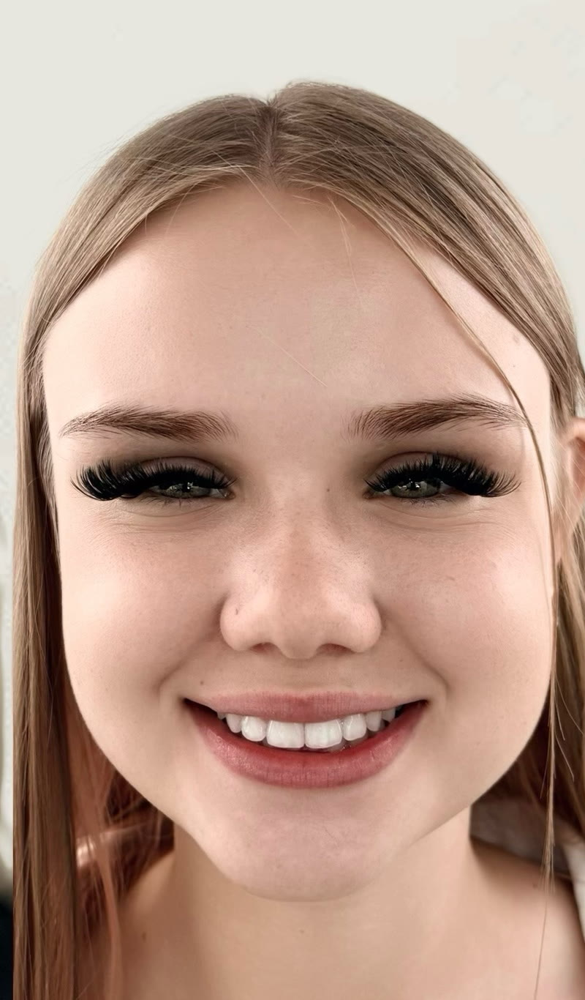
Нижняя челюсть расположена вперёд относительно верхней, зубы смыкаются обратным образом - один из самых сложных прикусов в ортодонтии. «Просто выровнять» здесь нельзя: нужно понимать скелетную основу и вести пациента по плану до финального смыкания. Слева - этап на брекет-системе, справа - результат.
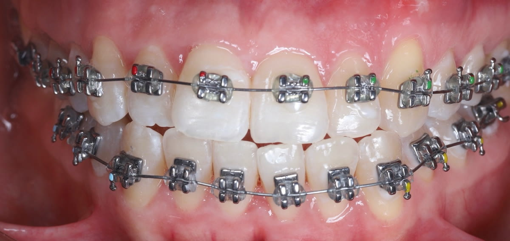
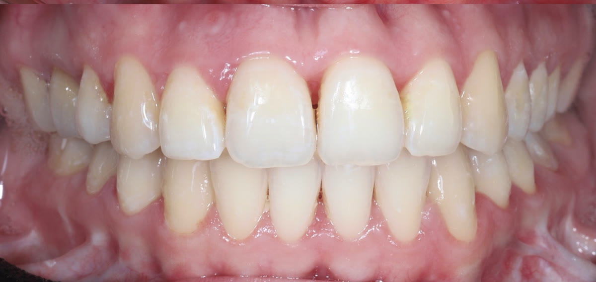
Если несоответствие челюстей скелетное, одними брекетами задачу не решить - подключается челюстно-лицевой хирург. Моя часть работы: подготовить зубные ряды к операции и довести смыкание после неё.
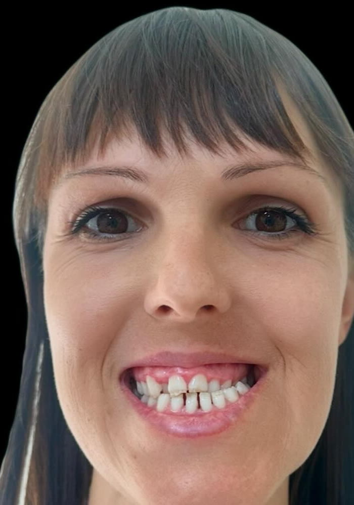
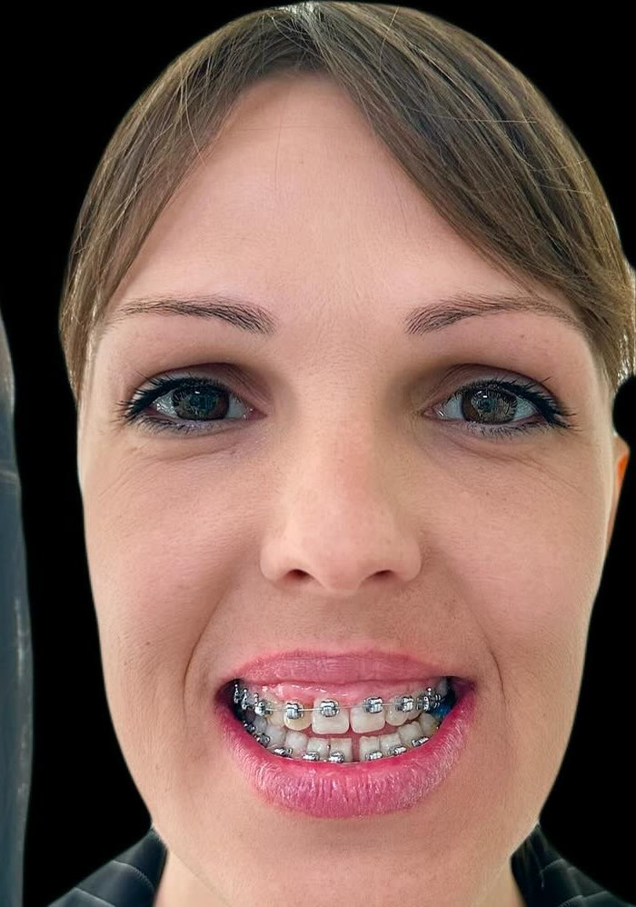
Пациент продолжает лечение: справа - промежуточный этап, а не финал.
Узкие зубные ряды - частая причина скученности и неправильного смыкания в боковых отделах. Работа шла на брекет-системе: сначала создавали место и расширяли ряды, затем выстраивали контакты зубов.
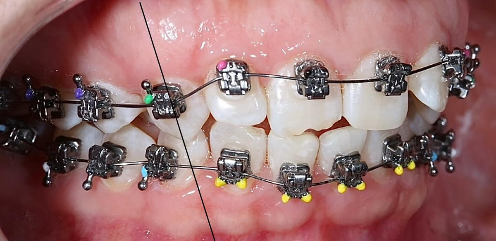
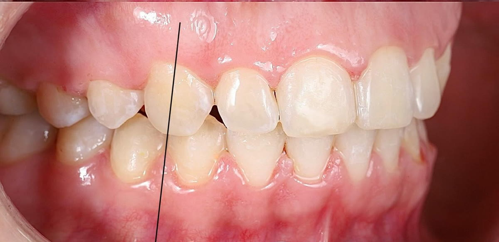
Отзывы
Оценка клиники на 2ГИС - 5,0 по семи отзывам. Здесь три из них, полностью и без правок.
Хочу выразить огромную благодарность Карине Ричардасовне за её профессионализм, внимательность и искреннюю заботу о пациентах
Здесь однозначно самые лучшие врачи! Лечимся всей семьей уже много лет у Карины Ричардасовны и у Артура Эдуардовича!
Великолепные опытные врачи, приятные цены, услуги не накручивают. Используют хорошие качественные материалы
На консультации разберём вашу ситуацию: что происходит с прикусом, какие есть пути, сколько времени займёт каждый и чем они отличаются между собой.
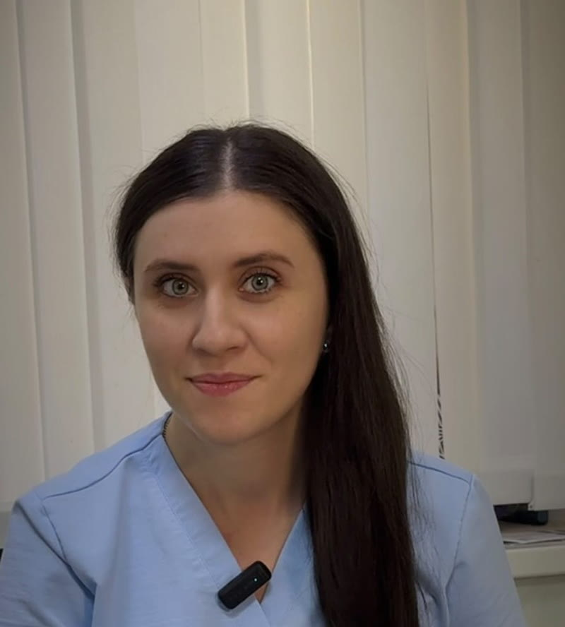
Карина Урбашевичус
О враче
В ортодонтии для меня важно не просто выровнять зубы. Важно добиться результата, который подходит конкретному человеку - с учётом прикуса, пропорций лица и его особенностей
Я не начинаю разговор с аппаратуры. Сначала слушаю, с чем человек пришёл: одному важна эстетика, другому - функция, третьего направил смежный специалист. От этого зависит, какой результат мы вообще будем считать хорошим.
Дальше объясняю без терминов ради терминов: что видно на снимках, какие есть пути и чем они отличаются. Пациент должен понимать, за что платит и сколько это займёт, - тогда он проходит лечение до конца, а не бросает на середине.
Часть случаев не решается в одиночку: подключаю челюстно-лицевого хирурга, ортопеда, ЛОР-врача, чтобы человек не ходил по кругу между кабинетами и не собирал противоречивые мнения сам.
Обучение
Современная ортодонтия развивается каждый год: меняются протоколы, аппаратура, подходы к диагностике. Поэтому я продолжаю учиться - на конференциях, курсах и разборах клинических случаев у ведущих специалистов. Пациент получает не «как учили когда-то», а актуальный протокол.
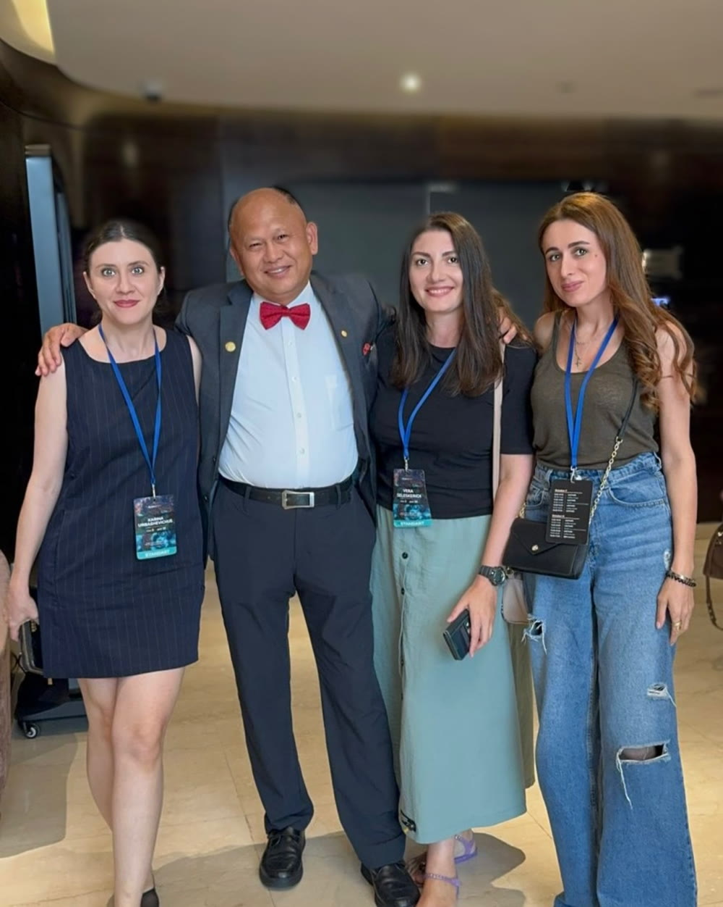
Профессиональная конференция ортодонтов
Клиника
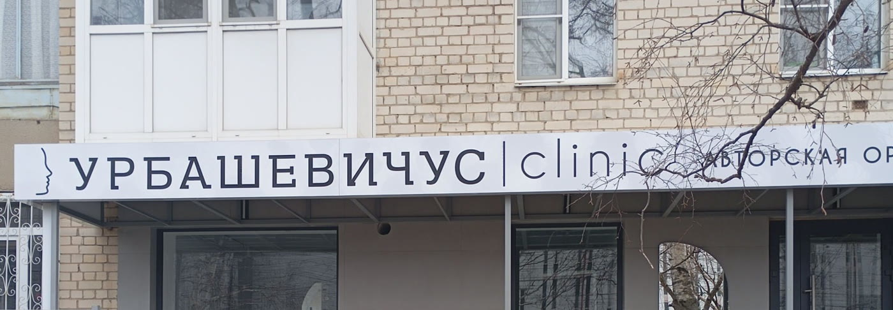
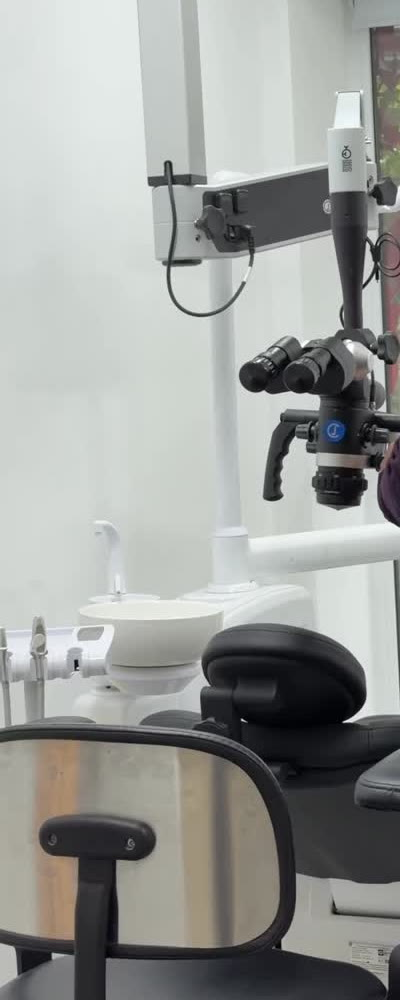
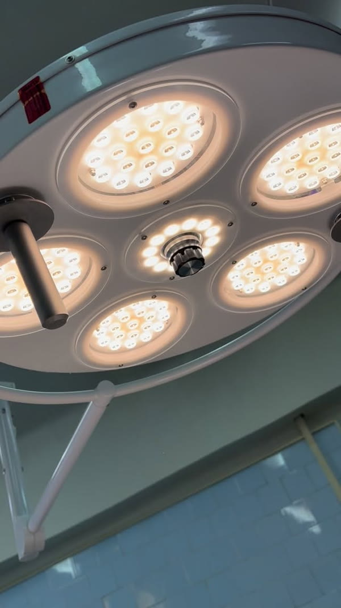
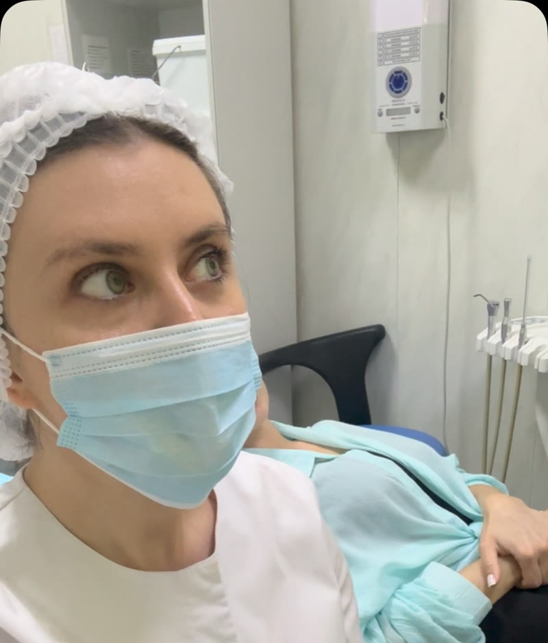
АдресСтаврополь,
ул. Тухачевского, 9
Собственная клиника, где я веду пациентов от диагностики до финала лечения. Приём по записи, чтобы каждому хватило времени на разбор ситуации.
Консультация
Проведём диагностику, разберём результаты и возможные варианты. Вы уйдёте с пониманием, что можно сделать в вашем случае, сколько это займёт и какой следующий шаг нужен.
Откроется диалог в Instagram Direct - опишите свою ситуацию в паре предложений
Приём в Ставрополе, ул. Тухачевского, 9 · по предварительной записи
Посмотреть на карте